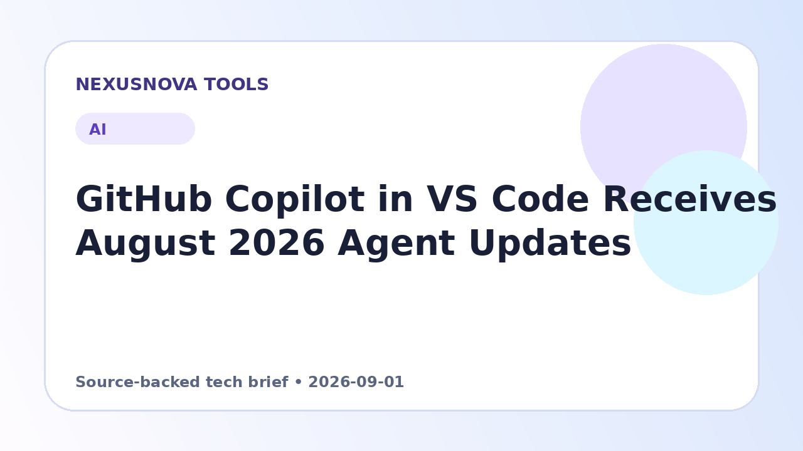

GitHub Copilot in VS Code Receives August 2026 Agent Updates
The August 2026 releases of Visual Studio Code bring major improvements to Copilot agent management, transcript navigation, browser integration, and localized dictation.
Published 2026-09-01 • NexusNova Editorial Team

Expanded Agent Sessions and Layout Flexibility
Throughout August 2026, GitHub rolled out Visual Studio Code versions 1.132 through 1.135, introducing significant enhancements to the Copilot editing workflow. Developers managing complex automation tasks can now organize their workspace using side-by-side chat layouts in vertical or horizontal arrangements. These side-by-side configurations preserve layout states when returning to a session. Furthermore, engineers can initiate side-conversations using the /btw command, allowing a secondary discussion to leverage the primary chat context and prompt cache without interrupting ongoing operations.
Managing session state across tools and windows has also been streamlined. The Agent Host now supports connecting multiple VS Code windows to a single agent session, while external sessions initiated in other applications appear directly in the local Sessions list for seamless continuation. Layouts have been refined to default to a single-pane setup for viewing session metadata alongside diffs, which dynamically re-adjust based on screen width. Additionally, navigation within long interactions is simplified via a prompt timeline control located in the transcript gutter, enabling developers to jump directly to specific prompts and review associated code modifications.
Model Choices and Experimental Agent Capabilities
The latest update broadens access and provider flexibility for Copilot and external model integrations. An experimental configuration option allows users to access the Agents window without authenticating through a GitHub sign-in, provided Claude is pre-configured with a valid API key. When working within Claude sessions, developers can toggle fluidly between models available under their Anthropic subscription and those provided by their Copilot subscription.
To assist with rigorous code analysis, the release includes an experimental /rubber-duck command within Agent Host sessions. This utility invites a complementary model into the discussion to evaluate potential edge cases and surface overlooked technical details. Support for portable extensions has also expanded through adherence to the Agent Plugins 1.0 specification, permitting consistent agent customization across VS Code and other compatible client platforms.
Enhanced Chat Controls, Search, and Diff Viewing
Reviewing lengthy conversations and tracking agent responses is now easier with several targeted interface improvements. Full-text search across the complete chat transcript supports regular expressions, case sensitivity matching, and whole-word filtering. To keep context clear during extended scrolling, chat sticky scroll maintains the active prompt pinned at the top of the pane. Users can also monitor resource consumption by hovering over the response footer to inspect detailed model token metrics, including input, cached input, and output figures.
Diff handling and output readability have similarly been upgraded. A hybrid Markdown editor experiment combines editing and diff viewing into a single view, while the breadcrumb bar allows rapid switching between standard and diff views in the Agents window. Terminal outputs displayed inside the chat interface now automatically reflow when resized. In addition, the integrated browser now lets developers select and annotate HTML elements directly for targeted UI feedback, automatically reloads local pages upon disk save, and can be designated as the default file viewer.
Multilingual Dictation and Command Cleanup
Built-in voice input functionality has been upgraded with an on-device model capable of detecting and processing multiple languages. Developers can manually select their target spoken language or rely on automatic detection. To ensure transcription alignment with project standards, users can set workspace-level or global cleanup rules. Furthermore, shell-aware filtering prevents spoken punctuation from corrupting terminal command syntax.
Practical next steps
- Update Visual Studio Code to version 1.135 or higher to access all August 2026 features.
- Try typing /btw in an active chat session to start a contextual side-conversation.
- Hover over response footers in chat turns to inspect input and output token consumption.
- Configure custom transcript cleanup rules in workspace settings for dictation accuracy.